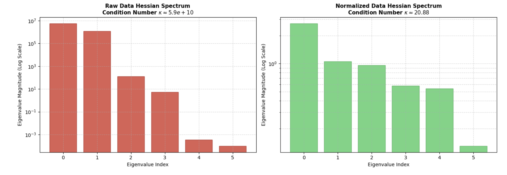
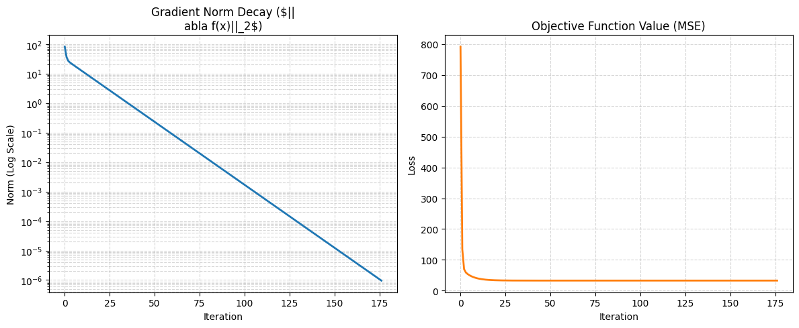
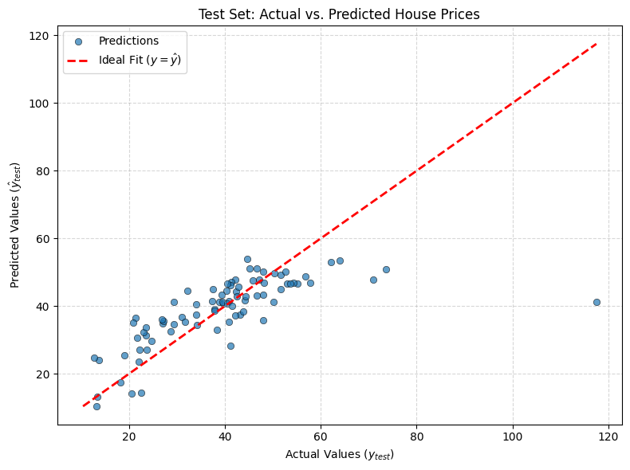

01 / Optimization
Gradient Descent From Scratch
An exploration of gradient-based optimization, step-size selection, and convergence behavior through a Python implementation.
Fitting a least-squares model
I implemented full-batch gradient descent in NumPy to predict house price per unit area from six features. The training design matrix had 331 rows and seven columns, including a column of ones for the intercept.
For the training design matrix \(X\), target vector \(y\), and coefficient vector \(w\), the update used the mean squared error gradient and its constant Hessian.
What normalization changed
I compared the Hessian spectra of the raw and normalized training features before adding the intercept. The condition number, the ratio of the largest to smallest eigenvalue, dropped from approximately \(5.88\times10^{10}\) to \(20.88\). A wide spread in curvature forces a fixed step size to accommodate the steepest direction, which can make progress along flatter directions slow.

Choosing the step size
For a positive-definite quadratic with Hessian eigenvalues between \(\mu\) and \(L\), the fixed step size that minimizes the worst-case contraction of the coefficient error is \(2/(L+\mu)\). The feature-only spectrum suggested a step size of about 0.351, which I tested on the model with an intercept.
Starting from zero and stopping when the gradient norm fell below \(10^{-6}\), the baseline step size of 0.01 took 5,216 updates. The 0.351 step size reached the same threshold in 176 updates, about 30 times fewer.

Checking the solution
The baseline coefficients were within \(3.84\times10^{-6}\) in Euclidean distance of the normal-equation solution. In the recorded run, the baseline loop took about 40.4 ms and the normal-equation calculation took about 0.46 ms. The loop timing excluded the Hessian setup. On this small dataset, the direct calculation was faster.
Held-out predictions
With the 0.351 step size, the fitted model reached an MSE of 65.47 on the training set and 125.17 on the held-out test set. The higher test error motivates evaluating ridge regularization, which the notebook outlines as a next experiment.
